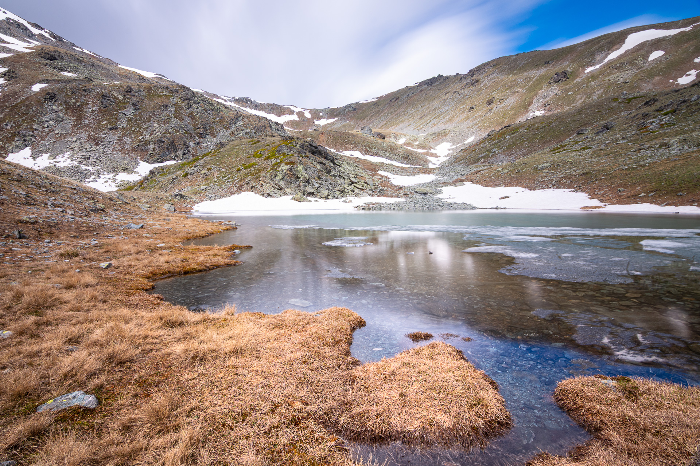

Rhododendron-Festival: Frühling am Dochula-Pass
Der Frühling im Himalaya kündigt sich nicht mit einem leisen Flüstern an, sondern mit einer plötzlichen Explosion von Farben über den hohen Bergpässen...

Stille Ufer: Begegnung mit Pinguinen in der Antarktis
Die Überquerung des Südlichen Ozeans an Bord der MV Ushuaia, einem bescheidenen roten Schiff für eisige Gewässer, fühlte sich an, als würde man die moderne Welt völlig hinter sich lassen...